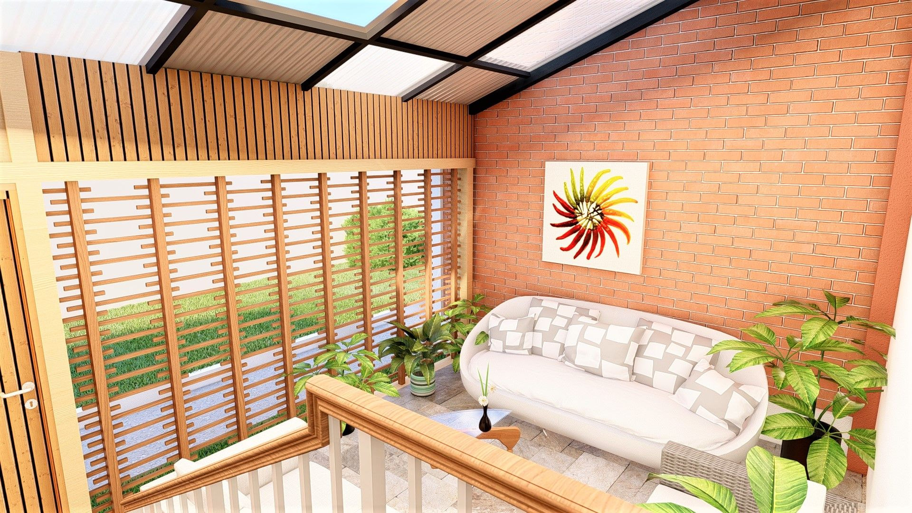
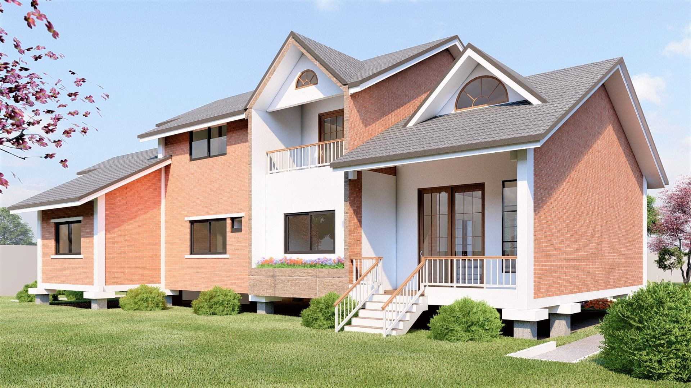
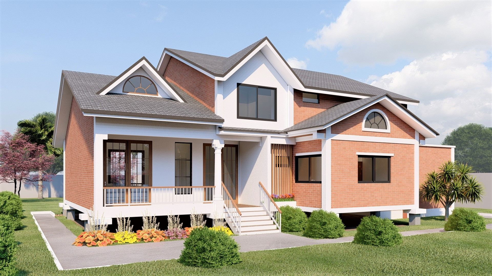
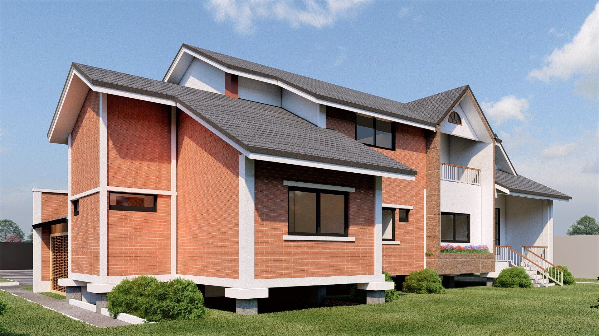

Sobriété et Modernité Urbaine
La Résidence Lipem est un projet d'habitat collectif qui privilégie la clarté des volumes et la fonctionnalité des espaces de vie. L'architecture s'inscrit dans une démarche de modernité sobre, utilisant des contrastes de façades et de larges ouvertures pour maximiser l'apport en lumière naturelle.
Chaque appartement a été conçu pour offrir une distribution fluide et un confort acoustique et thermique optimal. Le projet démontre une maîtrise de la conception BIM pour les programmes résidentiels denses, garantissant une cohérence parfaite entre les plans techniques et la vision architecturale finale.
Typologie
Immeuble de Logements
Année
2024
Expertise
Architecture & BIM



